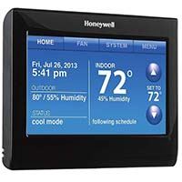

Honeywell Wi-Fi Smart Thermostat
Honeywell Wi-Fi Smart Thermostat
Description
Wi-Fi Thermostat allows for remote access via smartphone or computer: Free smartphone app for iPhone, iPad and Android operating systems; Voice Control allows you to adjust the temperature setting by talking to the thermostat; Universal compatibility - Works with most system types; Contemporary design with customizable color touchscreen; Can be configured to meet almost any scheduling requirement; Selectable 7-Day programmable thermostat with option to select option to select multiple days allowing the user to customize programming to their unique schedule; 4 Programmable periods per day; Pre-programmed with energy savings schedule; Control the system and fan; Smart Response Technology - Continually learns to pre-heat/cool your home so you are comfortable at your pre-programmed times; Auto change from heating to cooling; Filter change reminder; Multiple hold options; Automatically downloads software updates; Online and toll-free support available
In Stock
Price $300.00
Customer Reviews
I am a pretty big tech geek, and the smart home stuff has become a big interest for me recently. I can control my sprinklers and garage door from my phone/PC, and wanted to do the same with my thermostat. I had looked into the Nest and ecobee smart thermostats but both had limitations that held me back from actually buying them (see below). When I first saw this new Honeywell thermostat, it finally had everything I wanted and pushed me to actually go out and buy it.